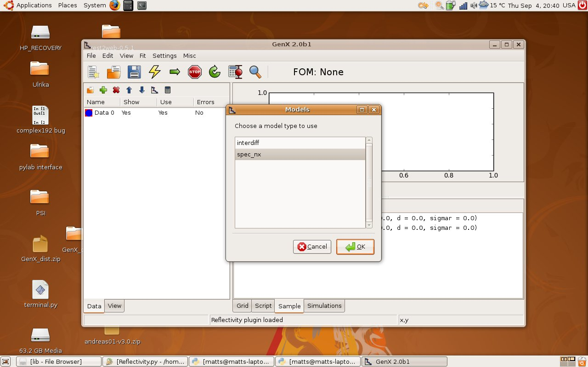
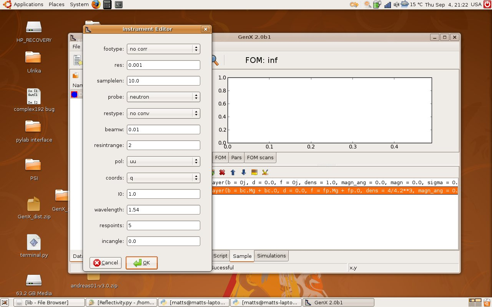

Neutron reflectivity tutorial¶
Getting started¶
Start by opening GenX. Load the reflectivity plugin by going to the menu . Two new tabs will appear in the lower right section of the window, Sample and Simulations. This is where we will define our sample later.
Creating a sample¶
Time to create the sample! Click on the Sample tab to get up our main working area at the moment. Next, create a new model by clicking on the new model button on the main toolbar (1). This will bring up a dialog window (2). Choose the spec_nx model, this includes neutron simulations.
Making a substrate¶
So now we have the right model to simulate neutron reflectivity. The first step is to define a substrate.
Double click on the substrate line in the list in the Sample tab, see below. This will pop up a dialog for
feeding in numbers that defines the substrate layer. Put in the same numbers as the ones below. Note that the b
box should say: bc.Mg + bc.O and in the f box should be fp.Mg + fp.O.

So what does all this mean? Here is a short explanations
b- The neutron scattering length per formula unit in fm (fermi meter = 1e-15m)
d- The thickness of the layer in AA (Angstroms = 1e-10m)
f- The x-ray scattering length per formula unit in electrons. To be strict it is the number of Thompson scattering lengths for each formula unit.
dens- The density of formula units in units per Angstroms. Note the units!
magn_ang- The angle of the magnetic moment in degres. 0 degrees correspond to a moment collinear with the neutron spin.
magn- The magnetic moment per formula unit (same formula unit as b and dens refer to)
sigma- The root mean square roughness of the top interface of the layer in Angstroms.
Note
To access the scattering length of isotopes use an i in front of the name. For example: For 57Fe the
scattering length expression would be bc.i57Fe. For Deuterium (2H) the expression would be bc.2H.
Doing a simulation¶
Making artificial data¶
First we have make some x-data (q values) so we need what to simulate. First mark Data0 in the Data tab. Next, click on the calculator above it to the right. This gives a dialog box. Choose the alternative: Simulation in the Import from, Predefined choice box. Edit it so it looks like the picture below. Click OK. Note that some data has occurred in the plot window now.

Defining the instrument¶
Now we have to tell the program what we mean with the data we have given it. Click on the instrument icon in the Sample tab (1). This gives the following dialog. Change the probe to neutron and coords to q. That is enough for now. Click Ok.
Simulation¶
Press the simulation button! (The big lightning in the main toolbar). This should produce something like this:

Okay, we have total reflectivity edge. Change the plot to log scale instead. Do this by going to the menu . So mission completed we have the first neutron simulation. Next step is to make a more complicated model and include polarized neutrons.
Adding Layers¶
Just simulating the reflectivity of a single substrate is not very fun. So, lets add another layer. Why not a magnetic? so we can play around with magnetic neutron reflectivity. Before we start adding layers we have to add a stack which will contain the layers. So Add a stack by clicking on the second toolbar button in the sample tab (The one with a stack of layers and a plus). Name it to Lays for example (In the popup dialog). Now we can add a layer (First button with one layer and a plus), call it Fe for example. Look on the screenshot below for the parameters.

Click on the simulate button again and have look at some Kiessig fringes.
Polarized Neutron Reflectivity¶
Lets start the polarized neutron reflectivity by turning the polarization on in the calculations. Go to the
instrument again and choose probe: neutron pol. At the same have look at the values for the pol parameter. That is
the polarization state of the instrument: uu, dd or ud. The last one is only valid for
spin-flip calculations. Press
simulate again and observe the change in the curve on the screen. For fun, change the polarization to dd and observe
the other spin channel. It would be nice to see both spin channels at the same time... But then we need two data sets.
Adding a new data set¶
Add a new data set by clicking on the Add data button, the green cross above the data list. Clicking on that gives a new data set: Data 1. Mark it and click on the calculator again. Now instead of typing all that we had to the last time we import the calculations from Data 0. Click on the choice box at the top left and choose Data 0. The calculations is imported. Click on Ok. It should look like this:

Making two different simulations¶
So now we have to data sets but we have to tie them to two different polarization states. How do we do that? Start by going to the simulation tab. Mark data set 0 in the list. Click the green button above and the a dialog box appears. Make the inputs look like this:

Note that the last box has to have quotation mark around it it should read 'uu'. Next, do the same for Data1.
Mark the item in the list and click the green plus. This time the last box should read 'dd'.

Okay everything is set up now press simulate and there we go. Two different spin channels in the same plot.

Finishing off¶
Perhaps the names are not so exciting, Data0 and Data1. They can be renamed by a slow double click on the name in data tab. Perhaps uu and dd is more appropriate. Also the color on the line can be changes so you can tell the difference. Mark one data set and click on the plot symbol in the small toolbar in data tab. You can then change the color and line width.
You can of course do other things and not only spin polarized calculations. Perhaps simulating the x-ray reflectivity of the same sample? Just remember that the wavelength has to set as well as the probe. I guess that you can think of a couple other uses.